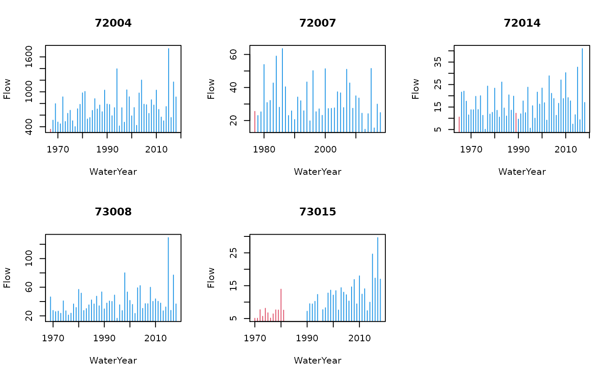
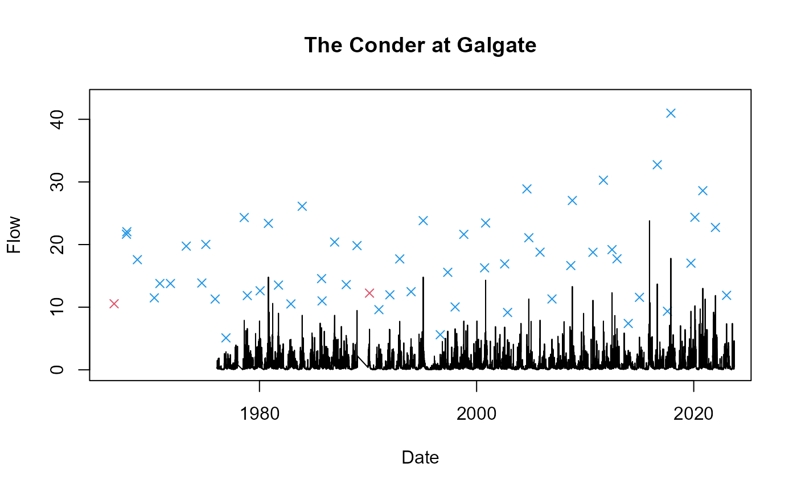

winfapReader.RmdThe winfapReader package contains functions to interact with the information on extremes of instantaneous river flow in the UK made available by the National River Flow Archive (NRFA). These information underlie most flood risk estimation projects in the UK, which are typically carried out using the Flood Estimation Handbook (FEH) statistical method and their updates as implemented by the software WINFAP. Consequently, the NRFA publishes and routinely updates files which are suitable to be read by WINFAP: the collection of these files is referred to as the peak flow dataset and can be found here. The winfapReader package allows the user to interact with three different file-types:
The .AM files which contain the Annual Maximum peaks: these correspond to the largest river flow event in any given water year (which runs from October 1st to September 30th)
The .CD3 files which contain the Catchment Descriptors: these correspond to a set of descriptors for the catchment upstream the gauging station and for the station itself.
The .PT files which contain the peaks over threshold: these correspond to all peaks which are larger than a given threshold. The threshold is fixed by the NRFA and it should be such that there is an average of 3 to 5 events per water year. It has often been reported that the POT records in different stations have varying reliability: since most flood frequency estimation methods used in the UK rely on annual maxima the AMAX records go trough a higher scrutiny than then POT records. Users should treat the information about peaks over threshold with caution and thorough quality checks should be performed before analysing them.
The winfapReader package allows you to read into your R session the .AM, .CD3 and.PT files. Importantly it is aware of the typical structure of the files in which rejected annual maxima and missing period of records for the peaks over threshold are recorded, and merges this information with the flow records. This allows the user to have all useful information to decide which parts of the record to include in the analysis.
Recently the NRFA has developed an API which allows for a programmatic interaction with their datasets: the information about annual maxima, catchment descriptors and peaks over threshold can also be retrieved using this API. Beside the information on extremes for flood frequency estimation the NRFA maintains and distributes daily river flow records and several other river flow related variables, such as catchment averaged rainfall: the rnrfa package allows one to retrieve these information and more with its rnrfa::get_ts function (see more on this at the end of the vignette). The winfapReader package focuses only on handling river flow extremes information and has two sets of functions:
the read_amax, read_cd3 and read_pot functions read the information from the .AM, .CD3 and .PT files once these have been dowloaded into a local folder
the get_amax, get_cd and get_pot functions get the information from the API: these functions therefore only work when an internet connection is available
It is difficult to showcase the use of the read_* functions since these rely on the location of the WINFAP files within the users’ working environment. Only the use of the get_* function will be showcased below. For the annual maxima and peaks over threshold the two sets of functions give the same output.
library(winfapReader)
### the get_* functions only works once you are connected to the internet
### they also need one to have the library httr installed
### verify if you have the library with (!requireNamespace("httr", quietly = TRUE))
### if FALSE install it with
### install.packages("httr")get_amaxfunctionThe read_amax function will produce the same output as the get_amax function.
if(curl::has_internet()) amaxEx <- get_amax(c(42003,72014))
names(amaxEx); class(amaxEx)
#> [1] "42003" "72014"
#> [1] "list"
# let's look at only one of these
a42003 <- amaxEx[["42003"]]
## what is the output
head(a42003)
#> Station WaterYear Date Flow Stage Rejected
#> 1 42003 1975 1976-09-30 4.16 -9999 TRUE
#> 2 42003 1976 1977-02-10 13.60 -9999 TRUE
#> 3 42003 1977 1977-12-10 14.90 -9999 TRUE
#> 4 42003 1978 1978-12-10 11.60 -9999 TRUE
#> 5 42003 1979 1979-12-27 9.92 -9999 TRUE
#> 6 42003 1980 1980-10-15 11.30 -9999 TRUEFor each station the function outputs a data.frame with information on the station number, the water year, the date in which the highest flow in the water year was recorded, the river flow value and the river stage value (when available) for all annual maxima recorded at a station. Moreover it gives the information on whether the NRFA has deemed the maximum in a given year to be reliable or whether this has been rejected. The function can query the API for more than one station at the time: in that case the output is a named list with each element corresponding to a station id.
get_potfunctionThe read_pot function will produce the same output as the get_pot function.
if(curl::has_internet()) potEx <- get_pot(c(42003,72014))
names(potEx); class(potEx)
#> [1] "42003" "72014"
#> [1] "list"
# let's look at only one of these
p42003 <- potEx[["42003"]]
## what is the output
class(p42003); names(p42003)
#> [1] "list"
#> [1] "tablePOT" "WaterYearInfo" "dateRange"For each station the function outputs a list with three elements:
tablePOT: a data.frame with all the recorded exceedances above the threshold in the NRFA record. In particular information on the exceedance date, water year, peak flow and river stage are given.head(p42003$tablePOT)
#> Station Date WaterYear Flow Stage
#> 1 42003 1982-10-14 1982 17.0 1.381
#> 2 42003 1982-10-22 1982 19.4 1.486
#> 3 42003 1982-11-24 1982 15.5 1.314
#> 4 42003 1982-12-09 1982 20.2 1.516
#> 5 42003 1985-01-20 1984 23.6 1.656
#> 6 42003 1986-11-21 1986 14.8 1.283
## notice: several events in the 1982 no events in 1983WaterYearInfo: a data.frame with information on the percentage of valid record in each water year in the record. The potPercComplete column is derived by calculating the percentage of days which are not included in the POT Gaps or the POT rejected headers in the NRFA .PT files. The column potThreshold gives the information of the flow threshold used to extract the peaks for the station: this is a constant for each station.head(p42003$WaterYearInfo)
#> WaterYear potPercComplete potThreshold
#> 1 1982 0 14.497
#> 2 1983 0 14.497
#> 3 1984 0 14.497
#> 4 1985 0 14.497
#> 5 1986 0 14.497
#> 6 1987 0 14.497dateRange gives the range of dates spanned by the POT record. This range might be wider than the range of the dates in the tablePOT table since it records the period in which the station was operational and no threshold exceedances occurred.The function has an argument getAmax which defaults to FALSE. If getAmax = TRUE then information on the annual maxima is included in the WaterYearInfo table.
p42003withAmax <- get_pot(42003, getAmax = TRUE)
head(p42003withAmax$WaterYearInfo, 10)
#> Station WaterYear amaxDate amaxFlow amaxStage amaxRejected potPercComplete
#> 1 42003 1975 1976-09-30 4.16 -9999.000 TRUE NA
#> 2 42003 1976 1977-02-10 13.60 -9999.000 TRUE NA
#> 3 42003 1977 1977-12-10 14.90 -9999.000 TRUE NA
#> 4 42003 1978 1978-12-10 11.60 -9999.000 TRUE NA
#> 5 42003 1979 1979-12-27 9.92 -9999.000 TRUE NA
#> 6 42003 1980 1980-10-15 11.30 -9999.000 TRUE NA
#> 7 42003 1981 1981-12-14 8.32 -9999.000 TRUE NA
#> 8 42003 1982 1982-12-09 20.20 1.516 TRUE 0
#> 9 42003 1983 1983-12-22 11.70 1.134 TRUE 0
#> 10 42003 1984 1985-01-20 23.60 1.656 TRUE 0
#> potThreshold
#> 1 NA
#> 2 NA
#> 3 NA
#> 4 NA
#> 5 NA
#> 6 NA
#> 7 NA
#> 8 14.497
#> 9 14.497
#> 10 14.497Notice that in the period when no POT records are available all POT related information are set to NA. On the other hand, the fact that the annual maximum in water year 1983 is below the threshold confirms that the fact that no POT record are present for that water year is related to low flows throughout the water year rather than a mistake in the POT record. Notice also that for several of the first years in the record the annual maxima values are rejected and the proportion of valid POT records (as shown by potPercComplete) is null: the early part of the record for this station has indeed been deemed by the NRFA to be unreliable and any analysis of this flow record should probably discard the information till water year 1995.
get_cdfunctionThe get_cd function allows the user to obtain information on the station (for example its location) and on the catchment upstream the station itself (for example the catchment area and the annual mean altitude for the catchment). More detail on several of the catchment descriptors can be found on the NRFA website and in the FEH. The function gives a slightly different set of information than the read_cd3 function, due to the difference in information made available by the NRFA API.
if(curl::has_internet()) cdEx <- get_cd(c(42003,72014))
names(cdEx); class(cdEx)
#> [1] "42003" "72014"
#> [1] "list"
# let's look at only one of these
c42003 <- cdEx[["42003"]]
## what is the output
class(c42003); names(c42003)
#> [1] "data.frame"
#> [1] "id" "river" "location"
#> [4] "easting" "northing" "latitude"
#> [7] "longitude" "feh-pooling" "feh-qmed"
#> [10] "feh-neither" "benchmark" "propwet"
#> [13] "bfihost" "farl" "dpsbar"
#> [16] "sprhost" "rmed-1d" "rmed-2d"
#> [19] "rmed-1h" "ldp" "dplbar"
#> [22] "altbar" "aspbar" "aspvar"
#> [25] "ihdtm-height" "ihdtm-catchment-area" "hydrometric-area"
#> [28] "qmed"The function has an argument fields which governs the amount of information obtained from the API. If fields = "feh" (the default) only the basic information used in the FEH methods is output. If fields="all" a data.frame with 104 columns is output. This contains several information about the station and the catchment, including data availability, land cover information and much more.
if(curl::has_internet()) cd42003all <- get_cd(42003, fields = "all")
names(cd42003all)
#> [1] "id" "name"
#> [3] "catchment-area" "river"
#> [5] "location" "station-level"
#> [7] "measuring-authority-id" "measuring-authority-station-id"
#> [9] "hydrometric-area" "opened"
#> [11] "closed" "station-type"
#> [13] "bankfull-flow" "structurefull-flow"
#> [15] "sensitivity" "nrfa-mean-flow"
#> [17] "nrfa-peak-flow" "feh-pooling"
#> [19] "feh-qmed" "feh-neither"
#> [21] "nhmp" "benchmark"
#> [23] "live-data" "factors-affecting-runoff"
#> [25] "gdf-start-date" "gdf-end-date"
#> [27] "gdf-mean-flow" "gdf-min-flow"
#> [29] "gdf-first-date-of-min" "gdf-last-date-of-min"
#> [31] "gdf-max-flow" "gdf-first-date-of-max"
#> [33] "gdf-last-date-of-max" "gdf-q95-flow"
#> [35] "gdf-q70-flow" "gdf-q50-flow"
#> [37] "gdf-q10-flow" "gdf-q05-flow"
#> [39] "gdf-base-flow-index" "gdf-day-count"
#> [41] "gdf-flow-count" "gdf-percent-complete"
#> [43] "peak-flow-start-date" "peak-flow-end-date"
#> [45] "qmed" "minimum-altitude"
#> [47] "10-percentile-altitude" "50-percentile-altitude"
#> [49] "90-percentile-altitude" "maximum-altitude"
#> [51] "saar-1941-1970" "saar-1961-1990"
#> [53] "lcm2000-woodland" "lcm2000-arable-horticultural"
#> [55] "lcm2000-grassland" "lcm2000-mountain-heath-bog"
#> [57] "lcm2000-urban" "lcm2007-woodland"
#> [59] "lcm2007-arable-horticultural" "lcm2007-grassland"
#> [61] "lcm2007-mountain-heath-bog" "lcm2007-urban"
#> [63] "high-perm-bedrock" "moderate-perm-bedrock"
#> [65] "low-perm-bedrock" "mixed-perm-bedrock"
#> [67] "high-perm-superficial" "low-perm-superficial"
#> [69] "mixed-perm-superficial" "propwet"
#> [71] "bfihost" "farl"
#> [73] "dpsbar" "sprhost"
#> [75] "rmed-1d" "rmed-2d"
#> [77] "rmed-1h" "ldp"
#> [79] "dplbar" "altbar"
#> [81] "aspbar" "aspvar"
#> [83] "ihdtm-height" "ihdtm-catchment-area"
#> [85] "mean-flood-plain-depth" "mean-flood-plain-location"
#> [87] "mean-flood-plain-extent" "urbext-1990"
#> [89] "urbconc-1990" "urbloc-1990"
#> [91] "urbext-2000" "urbconc-2000"
#> [93] "urbloc-2000" "easting"
#> [95] "northing" "latitude"
#> [97] "longitude" "grid-reference.ngr"
#> [99] "grid-reference.easting" "grid-reference.northing"
#> [101] "lat-long.string" "lat-long.latitude"
#> [103] "lat-long.longitude" "peak-flow-rejected-amax-years"winfapReader and rnrfa packagesThe rnrfa package provides a unique way to query several types of data from the NRFA. Information about extremes can also be retrieved using the rnrfa package, although there are some differences in the output provided when the data of interest are the peaks over threshold records.
The rnrfa::catalogue function allows one to pull the list of stations (and related metadata), falling within a given bounding box. The metadata retrieved by the function are similar to the ones derived from winfapReader::get_cd. This function can be used to identify the stations in an area for which peak flow information can be obtained with winfapReader. The code below for example identifies stations surrounding the city of Lancaster and then displays the annual maxima flow with red lines indicating Rejected flow values.
## Lancaster coordinates: 54.04, -2.8
## let's look around the city
rivLanc <- rnrfa::catalogue(bbox = list(lat_min = 54.04-0.2, lat_max = 54.04+0.2,
lon_min = -2.8-0.2, lon_max = -2.8+0.2))
### let's select stations which have been deemed to be suitable for pooling
### that's the highest quality flag for annual maxima
table(rivLanc$`feh-pooling`) ### 5 stations are suitable for pooling
#>
#> FALSE TRUE
#> 5 5
rivLanc[rivLanc$`feh-pooling`,1:3]
#> # A tibble: 5 x 3
#> id name `catchment-area`
#> <int> <chr> <dbl>
#> 1 72004 Lune at Caton 983
#> 2 72007 Brock at upstream of A6 32
#> 3 72014 Conder at Galgate 28.5
#> 4 73008 Bela at Beetham 131
#> 5 73015 Keer at High Keer Weir 48
### notice that rnrfa outputs a tibble and not a data.frame
idLanc <- unlist(rivLanc[rivLanc$`feh-pooling`,"id"]) ## a vector of ids
amaxLanc <- winfapReader::get_amax(idLanc)
names(amaxLanc)
#> [1] "72004" "72007" "72014" "73008" "73015"Now display the stations all together in a panel.

The large events which have hit the area in 2015 can be seen in the flow series plots.
The rnrfa package also allows to pull the annual maximum flow recorded at any station. To also obtain the infrormation about the water year which the NRFA has deemed to be of poor quality and therefore rejected set the full_info argument to TRUE.
par(mfrow=c(1,1))
### the annual maxima for 72014 from rnrfa
maxflow72014 <- rnrfa::get_ts(72014, type = "amax-flow", full_info = TRUE)
### the annual maxima for 72014 from winfapReader
xx <- amaxLanc[["72014"]][,c("Date","Flow","Rejected")]
plot(xx[,"Flow"], maxflow72014[,"amax-flow"]); abline(0,1) ### same information which(xx$Rejected) ## but two years should be rejected
#> [1] 1 25
which(maxflow72014$rejected == 1) ## same two years
#> [1] 1 25To obtain the POT records in rnrfa use type = "pot-flow": using the full_info = TRUE option ensures that a rejected flag is given for the periods in which the POT records have been found to be unreliable or missing (see the NRFA website for more details on this). The rejected flag is build using the same information used to build the WaterYearInfo table in the winfapReader::get_pot function. The additional information provided in WaterYearInfo is useful to idetify the years in which no POT record is found because the records are missing/unreliable and not because the threshold was never exceeded.
par(mfrow=c(1,1))
## the pot records for 75001 from rnrfa
#pot75001 <- rnrfa::get_ts(75001, type = "pot-flow", full_info = TRUE)
#pot75001[9:12,]
## using winfapReader
#p75001 <- get_pot(75001)
#p75001$tablePOT[9:12,]
## the same peaks are identified
#p75001$WaterYearInfo[1:5,] ### but notice that 1975 had a low proportion missing records
## the lack of data in 1975 is due to all flow being lowThe two packages can be used together to retrieve different type of information about river flow: in the example below daily gauged flow for the Conder at Galgate (station 72014) is displayed together with annual maxima (which are extracted from the instantaneous river flow). The latter are typically larger and can be seen to start further in the past than the daily flow data.
### get daily data from NRFA
daily72014 <- rnrfa::get_ts(72014, type = "gdf")
## make daily data into data.frame
daily72014 <- data.frame(Day = zoo::index(daily72014),
DFlow = as.vector(daily72014))
plot(xx[,c("Date","Flow")], col = ifelse(xx$Rejected, 2, 4),
pch = 4, ylim =c(0,1.05*max(xx$Flow)))
title(main = "The Conder at Galgate")
points(daily72014, type="l")